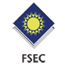

適應氣候
CNS 11526，SPV系列具有能承受 SPV 3600 帕和 BIPV 7200 帕抗壓能力，透過系統化規劃建置，能只接與建築物一體成型。完全適應安裝在高溫和多風的地區。
特殊防護
鹽霧腐蝕的特殊防護，通過 TÜVIEC 61701 認證，ASE 採用的光伏組件抗鹽和霧腐蝕，配合上高抗風的能力，讓 PV 太陽能面板安裝在沿海地區仍然保持良好的狀態。
安心防火
通過 IEC 61215、UL 790 的防火測試，剛效能的太陽能板能產生的直流電高達1000 V，ASE 採用通過嚴格防火測試的組件系統，將風險降至最低。放置在屋頂上承受太陽直射也無須擔心。
品質保證
ASE 除了提供完善的服務，更提供完美的品質。
採用技術龍頭 Inventec PV 創能太陽能面板，在專業的全無塵產線通過機械的智能篩選，嚴格的四道品質管控，以及全面性的測試，保障 PV 太陽能板的穩定性與效能。 除此之外通過無數的國際認證與無數國際使用個案。
業界首選 Inventec PV 板塊
ASE 絕對選用最高品質 PV 板塊
擁有 6×10 @ 280Wp 認證產品的 PV 板塊
擁有 6x12 @ 330Wp模塊，適用於大規模系統建置
高效能 6“ 多晶矽或單晶矽
正公差高達+ 5WP
高強度風荷載 2400 帕和雪荷載 5400 年利率
由 CHUBB Error and Omission (E&O) 保險投保
專業系統工程
完整系統建置工程
ASE 專業系統工程建置完整的系統，除了PV太陽創能系統本身，包含了完整的 電力系統 建置，專業並同步系統規劃 節能 、 創能 、 智能 一次大規模的完成整套創能電網與儲電或配電系統，無論是舊式系統改裝、全新的系統建置，ASE 皆有相關專業服務。
ESCO 合作模式
富有彈性的大型系統合約
ASE 透過與銀行第三方保證的方式，與您簽署對雙方都最有保障的合約，分期支付您的工程款項能讓工程系統的效益感受最大化，不必一次支付整筆的工程費用。另外銀行同時監督 ASE 完成合約中的系統工程，保障您能獲得最專業、最完善的 ASE 系統專業規劃。
詳細瞭解 ESCO